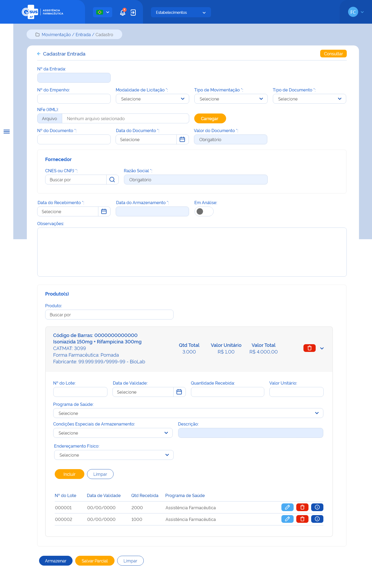

ETE017 - Cadastrar Entrada
Descrição (modelo história de usuário)
Como usuário quero editar uma entrada de produto(s) para adicioná-lo(s) ao estoque do estabelecimento de saúde logado
Protótipo 001

Elementos de Tela
- Bread Crumbs – “Movimentação / Entrada / Cadastro”
- Título da página – “Editar Entrada”
- “Seta” – M - retorna para a Tela de Consultar Entrada (ETE016)
- “Consultar” – BT
- Nº da Entrada – N (11) – Desabilitado para edição
- Nº do Empenho – A (14) (xxxxxxxxxx/aaaa)
- Modalidade de Licitação* – SU / AC
- Tipo de Movimentação* – SU / AC
- Tipo de Documento* – SU / AC
- NFe (XML) – A (30)
- “Carregar” – BT - upload do XML da NFe (ETE020)
- “Excluir” – M - excluir upload do XML da NFe
- Nº do Documento* – A (20)
- Data do Documento* – D (dd/mm/aaaa)
- Valor do Documento* – N (13,9) (R$ 99999999999999,999999999) - Desabilitado para edição
- Fornecedor
- CNES ou CNPJ* – N (14) (9999999 / 99.999.999/9999-99)
- “Lupa” – M - consulta de dados no portal do CNES e/ou RFB
- Razão Social* – A (80) - Desabilitado para edição
- Data do Recebimento* – D (dd/mm/aaaa)
- Data do Armazenamento* – D (dd/mm/aaaa) - Desabilitado para edição
- “Em Análise” – SU
- Observações – A (4000) - contador regressivo
- Produto(s)
- Produto* – A (500) / AC
- Lista de produtos da entrada - desabilitados para edição:
- Código de Barras – N (13)
- Princípio Ativo + Concentração – A (500)
- CATMAT – N (6)
- Forma Farmacêutica – A (20)
- Fabricante – A (80) <9999999> / <99.999.999/9999-99>-
- Qtd Total – N
- Valor Unitário – N (6,9) (R$ 999999,999999999)
- Valor Total – N (13,2) (R$ 99999999999999,99)
- “Excluir” – BT
- “Expandir/Retrair” – M
- Detalhe Produto
- Nº do Lote* – A (20)
- Data de Validade* – D (dd/mm/aaaa)
- Quantidade Recebida* – N
- Valor Unitário* – N (6,9) (R$ 999999,999999999)
- Programa de Saúde* – SU / AC / A
- Condições Especiais de Armazenamento – SU / AC
- Descrição* – A (80)
- Endereçamento Físico – SU / AC
- - “Incluir” – BT
- “Limpar” – BT
- Lista detalhe produto
- Nº do Lote
- Data de Validade
- Qtd Recebida
- Programa de Saúde
- “Editar” – BT
- “Excluir” – BT
- “Detalhar – BT – direciona para tela com os dados do detalhe do produto
- “Armazenar” – BT
- “Salvar Parcial” – BT
- “Limpar” – BT
Legenda
TIPO: A = Alfanumérico, N = Numérico, D = Data, M = Imagem, BT = Botão, LK = Link, SU = Seleção Única, SM = Seleção Múltipla, AC = Autocomplete, * = Obrigatório.
Critérios de Aceite
- O usuário somente pode acessar a funcionalidade caso tenha permissão; RGN001
- O acesso à funcionalidade é dado através do menu lateral no item “Movimentação”, subitem “Entrada”, na tela “Consultar Entrada” quando for acionada a opção “Editar”;
- O sistema deve recuperar e apresentar os dados da entrada cadastrada previamente, permitindo a edição de todos os campos;
- No campo “Modalidade de Licitação”, o sistema deve apresentar as opções: Concorrência, Convite, Diálogo Competitivo, Dispensa de Licitação, Inexigibilidade, Pregão, Tomada de preço;
- No campo “Tipo de Movimentação”, o sistema deve apresentar as opções: Ajuste de Estoque, Doação/Permuta, Entrada Ordinária, Produção Própria, Requisição, Saldo de Implantação;
- No campo “Tipo de Documento”, o sistema deve apresentar as opções: Aviso, Boletim, Carta, Certidão, Circular, Comprovante, Contrato, Convênio, Decreto, Despacho, Edital, Fax, Guia, Guia De Remessa, Instrução Normativa, Memorando, Mensagem, Nota Fiscal, Nota Fiscal Eletrônica, Ofício, Ordem De Serviço, Parecer, Portaria, Requerimento, Requisição, Resolução;
- Quando o usuário selecionar no campo “Tipo de Movimentação” a opção: “Saldo de Implantação” ou “Ajuste de Estoque”, o preenchimento dos campos “Modalidade de Licitação”, “CNES/CNPJ” (fornecedor), “Razão Social” (fornecedor), “Tipo de Documento”, “Número do Documento” e “Data do Documento” deixa de ser obrigatório. Já se selecionar a opção “Produção Própria”, o preenchimento dos campos “Tipo de Documento”, “Número do Documento” e “Data do Documento” deixam de ser obrigatórios; RGN024
- As opções “Requisição”, “Entrada por Estorno de Saída”, “Entrada por Estorno de Dispensação” e “Entrada por Estorno de Distribuição” não devem ser apresentadas no campo “Tipo de Movimentação”, pois são tipos de movimentação criados para entradas geradas automaticamente pelo sistema;
- Quando o usuário selecionar a opção “Nota Fiscal Eletrônica” no campo “Tipo de documento”, o sistema deve apresentar o campo “NFe (XML), permitir realizar o upload do XML da NFe e carregar automaticamente os campos: Fornecedor, Nº Documento, Data do documento, Valor do documento e Produto com Fabricante, Lote, Validade; (ETE020)
- Quando o usuário acionar a opção “Excluir” o arquivo XML da NFe, o sistema deve apresentar a mensagem de alerta ao usuário. Caso confirme a ação, apaga as informações carregadas automaticamente e permanece na tela de cadastro da entrada, bem como se a ação não for confirmada; MSG032
- O sistema deve validar a data do documento informada:
- Caso a data seja superior a data atual, o sistema deve apresentar uma mensagem de alerta ao usuário; MSG018
- Caso a data seja inferior a 1 ano da data atual, o sistema deve apresentar uma mensagem de alerta ao usuário; MSG019
- O campo “Valor do Documento” deve ser inabilitado para edição e o sistema deve calculá-lo automaticamente somado todos os valores totais dos produtos adicionados à entrada e apresentado em reais (R$) com até 2 dígitos após a virgula, realizando o arredondamento do valor se necessário; RGN026 RGN028
- Quando o usuário informar o CNES ou CNPJ do fornecedor e acionar a consulta, o sistema deve:
- Validar o CNES ou CNPJ. Caso o dado seja inválido, o sistema deve realçar o campo e alertar ao usuário; MSG015
- Recuperar e apresentar o nome do fornecedor do CNES informado, através da integração com o portal do Cadastro Nacional dos Estabelecimentos de Saúde (CNES). Caso não seja encontrado um estabelecimento para o dado informado, o sistema deve apresentar uma mensagem de alerta ao usuário; RGN020 RGN021 MSG017
- Recuperar e apresentar a razão social do fornecedor do CNPJ informado, através da integração com o portal da Receita Federal do Brasil (RFB). Caso não seja encontrado a pessoa jurídica para o CNPJ, o sistema deve apresentar uma mensagem de alerta ao usuário; RGN020 RGN021 MSG017
- O campo “Data do Recebimento” dever ser preenchido automaticamente com a data atual e habilitado para edição;
- O sistema deve validar a data de recebimento informada:
- Caso a data seja superior a data atual, o sistema deve apresentar uma mensagem de alerta ao usuário; MSG020
- Caso a data seja inferior a 1 ano da data atual, o sistema deve apresentar uma mensagem de alerta ao usuário; MSG021
- O campo “Data do Armazenamento” dever ser preenchido automaticamente com a data atual e desabilitado para edição;
- O campo “Em Análise” pode ser selecionado enquanto o(s) produtos da entrada não for(em) armazenado(s). Quando for selecionado, o sistema desabilita o botão “Armazenar”;
- No campo “Produto” quando o usuário informar:
- O Código de Barras do produto, o sistema deve:
- Recuperar o produto relacionado ao código de barras da base de dados de medicamentos; RGN015
- Emitir um alerta ao usuário caso o sistema não encontre o produto na base de dados de medicamentos; MSG022
- Limpar o campo Produto, quando o dado de código de barras for apagado.
- O Princípio Ativo ou Nome Comercial de um Medicamento ou Descrição do Produto para Saúde, o sistema deve:
- Emitir um alerta ao usuário caso o sistema não encontre o produto na base de dados de medicamentos ou produtos para saúde; MSG022
- Apresentar a lista de produtos ativos no sistema correspondestes ao valor informado no campo autocomplete a partir da indicação do 3º caractere; RGN015
- O Código de Barras do produto, o sistema deve:
- O sistema não deve permitir adicionar um produto já relacionado à entrada; MSG023
- O sistema deve apresentar a lista de produtos adicionados à entrada por ordem alfabética. A lista será expansiva, permitindo o preenchimento dos campos de detalhamento do produto; RGN023
- O(s) produto(s) adicionado(s) à entrada pode(m) ser excluído(s) desde que não tenha(m) detalhamento(s) vinculado(s) a ele; RGN025
- O campo “Qtd Total Recebida” deve ser inabilitado para edição e o sistema deve:
- Recuperar automaticamente a quantidade informada no campo “Qtd. Recebida” quando apenas um detalhamento do produto for adicionado;
- Calcular automaticamente somando todas as quantidades informadas nos detalhamentos adicionados ao produto; RGN037
- O campo “Valor Unitário” será carregado automaticamente com o dado informado neste campo no primeiro detalhamento do produto adicionado, ser apresentado em reais (R$) com até 9 dígitos após a virgula e desabilitado para edição;
- O campo “Valor Total” deve ser desabilitado para edição, calculado automaticamente através da fórmula: Qtd Total Recebida X Valor Unitário do produto e apresentado em reais (R$) com até 2 dígitos após a virgula, realizando o arredondamento do valor se necessário; RGN027 RGN028
- No detalhamento do Produto, o sistema deve verificar se:
- A data de validade informada é inferior ou igual à data atual ou com vencimento superior a 10 anos e emitir um alerta ao usuário; MSG024
- A quantidade recebida do produto é inferior a 1 e emitir um alerta ao usuário; MSG025
- O valor unitário informado para o produto é inferior a 0 e emitir um alerta ao usuário; MSG026
- No campo “Valor Unitário” no detalhamento do Produto, o sistema deve:
- Apresentá-lo em reais (R$) com até 9 dígitos após a virgula;
- Atribuir o mesmo valor unitário informado no primeiro detalhamento desse produto aos demais detalhamentos e desabilitar o campo para edição;
- No campo “Programa de Saúde” no detalhamento do Produto, o sistema deve apresentar as opções: Ação Judicial, Alimentação e Nutrição, Aciden. por Anim. Peçonhentos, Alzheimer, Antimicrobianos, Assistência Farmacêutica, Assist. Farmacêutica Básica, Assist. Farmacêutica Indígena, Assistência Social, Atenção Secundária, Brucelose, Calamidade Pública, Coagulopatias, Cólera, Coqueluche, Covid-19, Dengue, Diabetes, Doença de Chagas, Doença Falciforme, DPOC, DST/AIDS, DST/AIDS - Infec. Oportunistas, Enxerto contra hospedeiro, Endemias Focais, Especializado, Esquistossomose, Febre Maculosa, Filariose, Geohelmintíases, Glaucoma, Imunização, Hanseníase, Hemoderivados, Hemoglobinopatias, Hepatites, Hipertensão, Hospitalar, Influenza, Insumos e Produtos para saúde, Leishmaniose, Lúpus Eritematoso Sistêmico, Malária, Manipulados, Meningite, Micoses Sistêmicas, Mieloma Múltiplo, Odontologia, Oncologia, Órteses e Próteses, Parkinson, Peste, Programa de Toxicologia, Raiva, Sarampo, Saúde da Criança, Saúde da Família, Saúde do Idoso, Saúde Mental, Saúde da Mulher, Saúde Prisional, Sífilis, Suplementação de Ferro, Tabagismo, Toxoplasmose, Tracoma, Tuberculose, Tuberculose Multirresistente, Urgência e emergência.
- No campo “Condições Especiais de Armazenamento” no detalhamento do Produto, o sistema deve apresentar as opções: Climatizado (15°C a 30°C), Congelado (Abaixo de 0°C), Resfriado (2°C a 8°C), Sem Condições Especiais, Outros.
- O campo “Descrição” somente será apresentado quando no campo “Condições Especiais de Armazenamento” for selecionada a opção “Outros”.
- No campo “Endereçamento Físico” no detalhamento do Produto, o sistema deve:
- Desabilitá-lo para edição quando o estabelecimento não possuir um endereçamento físico cadastrado e ativo;
- Preenche-lo automaticamente com endereçamento físico quando o estabelecimento possuir apenas um endereço cadastrado e ativo;
- Apresentar a lista de endereçamentos físicos cadastrados e ativos para o estabelecimento quando este possuir mais de um endereço.
- Os Campos “CNES/CNPJ” e “Razão Social” do Fabricante, no detalhamento do Produto, somente serão apresentados quando o produto adicionado for um Produto para a Saúde [(Descrição do Produto) + (CATMAT)];
- Quando o usuário informar o CNES ou CNPJ do fabricante e acionar a consulta, o sistema deve:
- Validar o CNES ou CNPJ. Caso o dado seja inválido, o sistema deve realçar o campo e alertar ao usuário; MSG015
- Recuperar e apresentar o nome do fabricante do CNES informado, através da integração com o portal do Cadastro Nacional dos Estabelecimentos de Saúde (CNES). Caso não seja encontrado um estabelecimento para o dado informado, o sistema deve apresentar uma mensagem de alerta ao usuário; RGN020 RGN021 MSG045
- Recuperar e apresentar a razão social do fabricante do CNPJ informado, através da integração com o portal da Receita Federal do Brasil (RFB). Caso não seja encontrado a pessoa jurídica para o CNPJ, o sistema deve apresentar uma mensagem de alerta ao usuário; RGN020 RGN021 MSG045
- O sistema deve permitir adicionar mais de um detalhamento ao produto, permitindo a entrada do mesmo produto com lotes e datas de validades diferentes;
- O(s) detalhamento(s) vinculado(s) ao produto pode(m) ser excluído(s);
- O sistema não deve permitir adicionar um detalhamento com o mesmo Nº do Lote e Data de Validade de um detalhamento já vinculado o produto na entrada; MSG027
- Quando o usuário acionar a opção de “Salvar Parcial”, o sistema deve verificar se:
- Existe uma entrada com o mesmo tipo, número de documento e fornecedor de uma entrada armazenada ou em preenchimento para o estabelecimento. Caso sim, o sistema apresenta uma mensagem de alerta ao usuário e permanece na tela de cadastro da entrada; RGN029 MSG028
- Existe ao menos um detalhamento vinculado ao(s) produto(s) da entrada. Caso não, o sistema apresenta uma mensagem de alerta ao usuário e permanece na tela de cadastro da entrada; MSG029
Atendendo as validações, o sistema mantém o registro da entrada com estado “Ativo” e a situação “Em preenchimento” e permanece na tela de cadastro da entrada; MSG031 RGN030 RGN005
- Quando o usuário acionar a opção “Armazenar”, o sistema deve verificar se:
- Existe uma entrada com o mesmo tipo, número de documento e fornecedor de uma entrada armazenada ou em preenchimento para o estabelecimento. Caso sim, o sistema apresenta uma mensagem de alerta ao usuário e permanece na tela de cadastro da entrada; RGN029 MSG028
- Existe ao menos um produto relacionado à entrada. Caso não, o sistema apresenta uma mensagem de alerta ao usuário e permanece na tela de cadastro da entrada; MSG030
- O detalhamento de todos os produtos da entrada foi incluído. Caso não, o sistema apresenta uma mensagem de alerta ao usuário e permanece na tela de cadastro da entrada; MSG029
Atendendo as validações, o sistema efetiva o cadastro da entrada, mantém o estado do registro como “Ativo”, grava a situação como “Armazenada”, armazena os produtos no estoque do estabelecimento, apresenta a mensagem de sucesso e retorna à tela de consulta às entradas apresentando este registro como o primeiro da relação das entradas cadastradas para o estabelecimento; MSG044 RGN030 RGN005
- O sistema, identificando que uma entrada de produto(s) foi armazenada, deve creditar a quantidade no saldo deste(s), considerando lote, validade e programa de saúde e atualizar a posição de estoque do estabelecimento que realizou a entrada; RGN031
- a mensagem de alerta ao usuário. Caso confirme a ação, retorna à tela de consulta as entradas e não salva as edições realizadas. Caso a ação não seja confirmada, permanece na tela de cadastro da entrada; MSG006
- O sistema deve gravar a data, hora e CPF e nome do usuário que a executou qualquer ação de alteração no estado do registro. RGN005